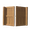
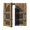
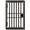
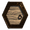
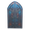

门
本站支持中英文站内搜索。带 ↗ 的链接指向外部网站；各页来源版本见页脚。
门 可能指：

木制大门
深色木制大门
铁门
六边形大门
焰金属大门 巨木大门，用巨木和血金建造的极北之地大门。
巨木大门，用巨木和血金建造的极北之地大门。
单扇门请参阅门。
 | 本消歧义页列出同名条目。若通过内部链接来到这里，可以修改该链接，让它直接指向所需条目。 |
Gate may refer to:
- Wood Gate
- Darkwood Gate
- Iron Gate
- Hexagonal Gate
- Flametal Gate
- Timberwood Gate, a Deep North gate built from Timberwood and Bloodgold.
For single doors, see Door.
| This disambiguation page lists articles associated with the same title. If an internal link referred you here, you may wish to change the link to point directly to the intended article. |